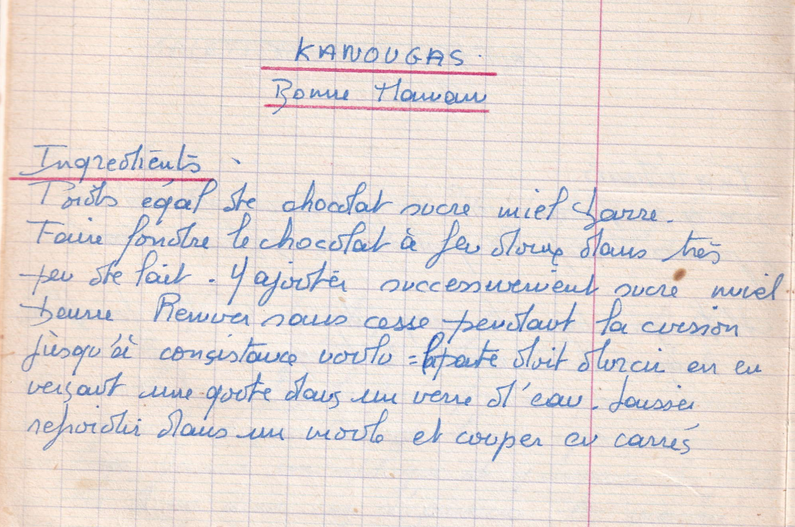

Kanougas
Bonne maman

LISTE DES INGREDIENTS
- Poids égal de chocolat sucre miel beurre
PREPARATION
- Faire fondre le chocolat à feu doux dans très peu de lait
- Y ajouter successivement sucre, miel beurre
- Remuer sans cesse pendant la cuisson jusqu'à consistence voulue: la pate doit durcir en en versant une goutte dans un verre d'eau
- Laisser refroidir dans un moule et couper en carrés